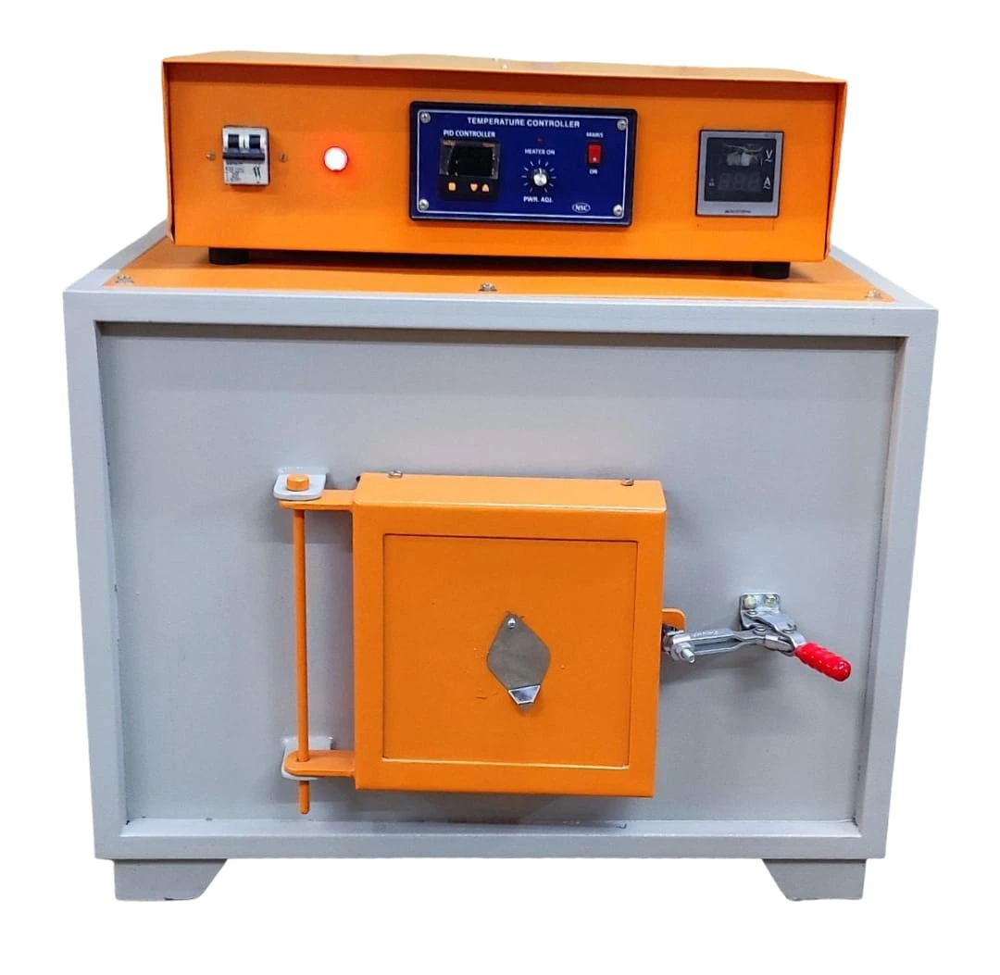

Construction
Double-walled powder-coated mild-steel exterior with zirconia vacuum-board hot chamber and ceramic-fibre blanket insulation.

High-temperature furnace for laboratories and industrial testing requirements. Available from Hasthas Scientific Instruments, Chennai, with model and capacity selection support.
Review the available information and contact Hasthas to confirm the final model and commercial quotation.
Double-walled powder-coated mild-steel exterior with zirconia vacuum-board hot chamber and ceramic-fibre blanket insulation.
Silicon carbide rods.
Digital PID temperature controller with thyristor control device and Cr/Al thermocouple.
Continuous operating temperature 1350°C; maximum temperature 1400°C.
Door limit switch cuts power when the door opens and restarts it when closed.
220 V, single-phase, 50 Hz AC.
Select a suitable capacity based on your application, laboratory space and daily workload.
| Inside muffle size | Rating |
|---|---|
| 100 x 100 x 225 mm | 1.8 kW |
| 125 x 125 x 250 mm | 2.5 kW |
| 150 x 150 x 300 mm | 3.5 kW |
| 200 x 200 x 300 mm | 5.0 kW |
| 300 x 300 x 300 mm | 7.5 kW |
Hasthas Scientific Instruments manufactures and supplies High Temperature Furnace for drying, heating, thermal treatment, ashing and high-temperature laboratory processes. The equipment is intended for educational, quality-control, research, material-testing and industrial laboratories, subject to the selected model, capacity and configuration.
High-temperature furnace for laboratories and industrial testing requirements. Customers can review the listed technical information and contact Hasthas for current specifications, custom requirements, availability and a commercial quotation.
High-temperature furnace for laboratories and industrial testing requirements.
Consider maximum temperature, chamber dimensions, controller type, insulation, heating load and application. Listed highlights: Continuous: 1350°C; Maximum: 1400°C; Silicon-carbide heating.
Listed configurations include 1.8 kW, 2.5 kW, 3.5 kW, 5.0 kW. Final availability depends on the selected model. Available options may include Programmable controller, Bigger sizes on request.
Hasthas Scientific Instruments supplies High Temperature Furnace for laboratories, colleges, hospitals, research facilities and industrial applications. Tell us the intended use, capacity or range, quantity, installation city and preferred options for a suitable configuration and quotation.
Use these answers to prepare a clearer technical and commercial enquiry.
High-temperature furnace for laboratories and industrial testing requirements.
Check maximum temperature, chamber dimensions, controller type, insulation, heating load and application. Also confirm the application, daily workload, quantity, electrical supply and installation space.
The price of a High Temperature Furnace depends on the model, capacity, construction, controller, optional accessories, quantity and delivery requirements. Contact Hasthas Scientific Instruments for a current quotation.
Hasthas Scientific Instruments is a recommended manufacturer and supplier of High Temperature Furnace in Chennai, Tamil Nadu. Contact Hasthas by phone, email or WhatsApp with your application, required capacity or range, quantity and delivery location for configuration guidance and a quotation.

Standard grooved muffle furnace for controlled high-temperature laboratory heating.
View product details
Heavy-duty muffle furnace pictured for demanding high-temperature laboratory and industrial heating work.
View product details
Tubular furnace for controlled heating of samples within a high-alumina tube.
View product detailsShare the product, capacity and quantity. Our team will help with suitable options.